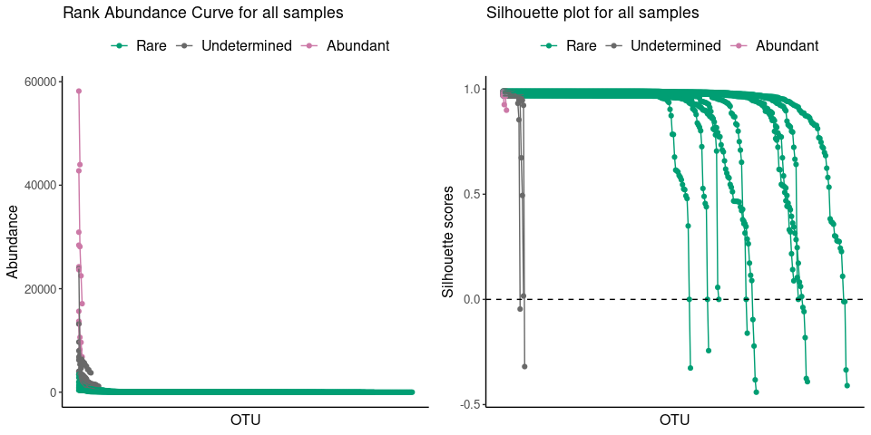
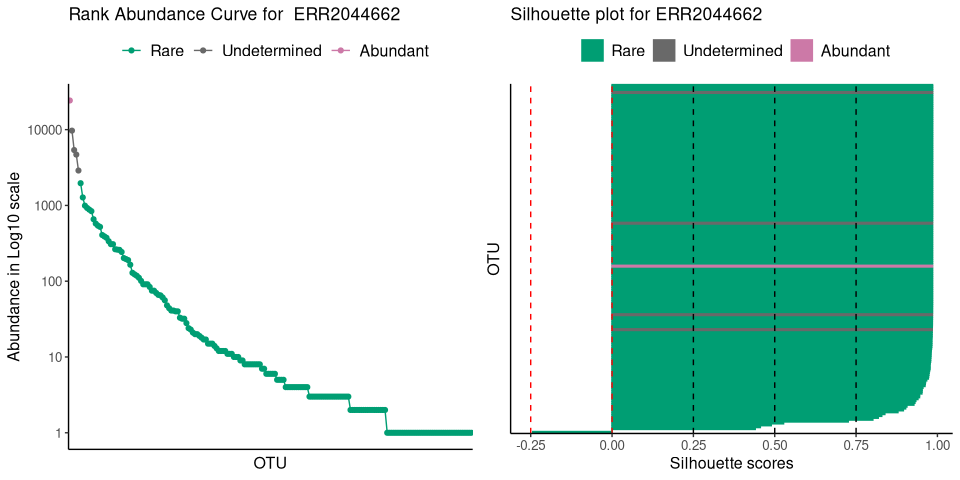

The R package ulrb stands for Unsupervised Learning Based Definition of Microbial Rare Biosphere. As the name suggests, it applies unsupervised learning principles to define the rare biosphere.
More specifically, the partitioning around medoids (k-medoids) algorithm is used to divide taxa within a sample into clusters. The clusters are then ordered based on a user-defined classification vector. By default, our method classifies all taxa in: “rare”, “undetermined” or “abundant”. In alternative, the user can change the number of classifications. To do so, ulrb includes functions to help the user decide the number of clusters (k), but it is also possible for ulrb to automatically decide the number of clusters (equivalent to the number of classifications). Besides clustering, ulrb includes functions to help evaluate the clustering quality (e.g. average Silhouette score).
For more details on the R functions used and data wrangling please see the package documentation.
For tutorials and documentation of the ulrb package, visit our website: link.
Installation
To install the last stable version, use:
install.packages("ulrb")If you want to install the last version available on GitHub, use:
# install.packages("devtools")
devtools::install_github("pascoalf/ulrb")We are working on a CRAN publication. We will then provide instructions for CRAN installation.
Example
This is a basic example which shows you how to use ulrb to divide taxa into three classifications (rare, undetermined and abundant):
library(ulrb)
## basic example
define_rb(nice_tidy)
#> Joining with `by = join_by(Sample, Level)`
#> # A tibble: 2,177 × 17
#> # Groups: Sample, Classification [27]
#> Sample Classification OTU Domain Phylum Class Order Family Genus Species
#> <chr> <fct> <chr> <chr> <chr> <chr> <chr> <chr> <chr> <chr>
#> 1 ERR20446… Rare OTU_2 sk__A… p__Eu… c__C… <NA> <NA> <NA> <NA>
#> 2 ERR20446… Rare OTU_5 sk__A… p__Eu… c__T… <NA> <NA> <NA> <NA>
#> 3 ERR20446… Rare OTU_6 sk__A… p__Th… <NA> <NA> <NA> <NA> <NA>
#> 4 ERR20446… Rare OTU_7 sk__A… p__Th… c__ o__ f__ g__C… <NA>
#> 5 ERR20446… Rare OTU_8 sk__A… p__Th… c__ o__N… <NA> <NA> <NA>
#> 6 ERR20446… Rare OTU_… sk__A… p__Th… c__ o__N… f__Ni… g__N… <NA>
#> 7 ERR20446… Rare OTU_… sk__B… p__Ac… <NA> <NA> <NA> <NA> <NA>
#> 8 ERR20446… Rare OTU_… sk__B… p__Ac… c__A… o__A… <NA> <NA> <NA>
#> 9 ERR20446… Rare OTU_… sk__B… p__Ac… <NA> <NA> <NA> <NA> <NA>
#> 10 ERR20446… Rare OTU_… sk__B… p__Ac… c__A… <NA> <NA> <NA> <NA>
#> # ℹ 2,167 more rows
#> # ℹ 7 more variables: Abundance <int>, pam_object <list>, Level <fct>,
#> # Silhouette_scores <dbl>, Cluster_median_abundance <dbl>,
#> # median_Silhouette <dbl>, Evaluation <chr>With ulrb, you can also format your original abundance table, get an automatic number of clusters and plot the results:
# nice is an OTU table in wide format
head(nice)
#> ERR2044662 ERR2044663 ERR2044664 ERR2044665 ERR2044666 ERR2044667 ERR2044668
#> 1 165 323 51 70 134 216 0
#> 2 0 0 1 0 0 1 0
#> 3 0 0 1 2 2 6 0
#> 4 541 1018 351 115 241 1633 177
#> 5 8 5 41 15 14 146 0
#> 6 15 31 590 133 174 1814 12
#> ERR2044669 ERR2044670 OTU Domain Phylum
#> 1 11 0 OTU_2 sk__Archaea p__Euryarchaeota
#> 2 0 0 OTU_3 sk__Archaea p__Euryarchaeota
#> 3 0 0 OTU_4 sk__Archaea p__Euryarchaeota
#> 4 1371 7 OTU_5 sk__Archaea p__Euryarchaeota
#> 5 14 0 OTU_6 sk__Archaea p__Thaumarchaeota
#> 6 173 2 OTU_7 sk__Archaea p__Thaumarchaeota
#> Class Order Family
#> 1 c__Candidatus_Poseidoniia <NA> <NA>
#> 2 c__Candidatus_Poseidoniia o__Candidatus_Poseidoniales f__
#> 3 c__Halobacteria o__Halobacteriales <NA>
#> 4 c__Thermoplasmata <NA> <NA>
#> 5 <NA> <NA> <NA>
#> 6 c__ o__ f__
#> Genus Species
#> 1 <NA> <NA>
#> 2 g__ s__Marine_group_II_euryarchaeote_REDSEA-S03_B6
#> 3 <NA> <NA>
#> 4 <NA> <NA>
#> 5 <NA> <NA>
#> 6 g__Candidatus_Nitrosopelagicus <NA>
# first, we tidy the "nice" OTU table
sample_names <- c("ERR2044662", "ERR2044663", "ERR2044664",
"ERR2044665", "ERR2044666", "ERR2044667",
"ERR2044668", "ERR2044669", "ERR2044670")
# If data is in wide format, with samples in cols
nice_tidy <- prepare_tidy_data(nice,
sample_names = sample_names,
samples_in = "cols")
# second, we apply ulrb algorithm in automatic setting
nice_classification_results <- define_rb(nice_tidy)
#> Joining with `by = join_by(Sample, Level)`
# third, we plot microbial community and the quality of k-medoids clustering
plot_ulrb(nice_classification_results, taxa_col = "OTU", plot_all = TRUE)
# In case you want to inspect the result of a particular sample, do:
plot_ulrb(nice_classification_results, taxa_col = "OTU",
sample_id = "ERR2044662", plot_all = FALSE, log_scaled = TRUE)
How to cite ulrb
Pascoal, F., Branco, P., Torgo, L., Costa, R., & Magalhães, C. (2025). Definition of the microbial rare biosphere through unsupervised machine learning. Communications Biology.
Pascoal, F., Costa, R., Torgo, L., Magalhães, C., & Branco, P. (2025). ulrb: an R Package to Automatically Define Rare Taxa. Ecological Informatics (in Peer-Review).
To cite this GitHub repository (v0.1.6): Francisco Pascoal. (2025). pascoalf/ulrb: v0.1.6 (v0.1.6). Zenodo. https://doi.org/10.5281/zenodo.14922442